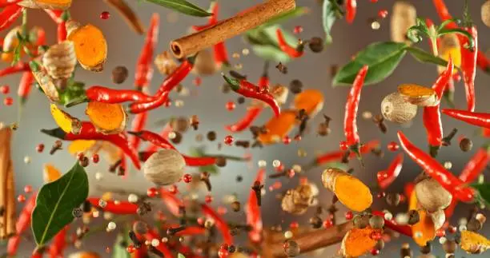

The Global Journey of the Chili Pepper: A Fiery History
Posted on July 7, 2025 by The EpicSpicyEats Team
The humble chili pepper, a fruit that has ignited palates and transformed cuisines across the globe, boasts a history as vibrant and complex as its flavor. Its journey from a wild plant in the Americas to a ubiquitous ingredient in kitchens worldwide is a testament to human curiosity, trade, and culinary innovation. Often mistaken for a spice or a vegetable, the chili pepper (genus Capsicum) is botanically a fruit, a berry, to be precise. Its defining characteristic, the burning sensation it imparts, comes from capsaicin, a compound concentrated in the white pith and seeds.
Archaeological evidence suggests that chili peppers were first domesticated in South America, specifically in what is now Bolivia, over 6,000 years ago. They were among the earliest cultivated crops in the Americas, predating corn and beans in some regions. Ancient civilizations like the Aztecs and Mayans not only used chilies extensively in their food but also for medicinal purposes and even as a form of currency. The diversity of chili peppers found in the Americas, from the mild bell pepper to the scorching habanero, speaks to millennia of selective cultivation by indigenous peoples.
The pivotal moment in the chili pepper's global expansion arrived with Christopher Columbus's voyages to the Americas. In 1492, upon encountering chilies in the Caribbean, he mistakenly identified them as a type of pepper (due to their spicy taste, similar to black pepper, a highly prized spice in Europe at the time). He brought them back to Spain, and from there, their journey across the old world began. Unlike many New World crops that took centuries to gain acceptance, chilies spread with astonishing speed. Their ease of cultivation in diverse climates, combined with their ability to add flavor and preserve food, made them an instant hit.
Portuguese traders played a crucial role in introducing chilies to Asia and Africa. They carried them along their trade routes, from their outposts in Goa, India, to Southeast Asia and beyond. In India, chilies quickly became an integral part of the local cuisine, replacing black pepper as the primary source of heat and contributing to the development of countless regional curries and dishes. The vibrant colors and intense flavors of Indian cuisine today are unimaginable without the chili pepper. Similarly, in Thailand, chilies transformed the culinary landscape, becoming central to dishes like curries and stir-fries, providing the characteristic fiery kick.
Across Africa, chilies found fertile ground and eager palates. From the fiery stews of Ethiopia, like Doro Wat, to the vibrant sauces of West Africa, chilies became a fundamental ingredient, often integrated into traditional spice blends. Their ease of growth and ability to thrive in warm climates ensured their rapid adoption. In Europe, while initially embraced in Spain, Portugal, and Italy (where they became a cornerstone of Southern Italian cuisine, particularly in Calabria), chilies took longer to gain widespread acceptance in Northern Europe, where milder flavors were preferred. However, with the rise of globalized food trends, their popularity has surged even there.
The adaptability of the chili pepper is remarkable. Over centuries, different cultures have selectively bred and cultivated varieties suited to their local tastes and culinary needs. This has resulted in the incredible diversity we see today: the smoky chipotle, the fruity habanero, the earthy ancho, the bright serrano, the pungent bird's eye, and the numbing Sichuan peppercorn (though botanically not a true chili, it's often associated with the "spicy" experience). Each variety offers a unique flavor profile and heat level, allowing chefs and home cooks to precisely tailor the spiciness of their dishes.
Beyond its culinary uses, the chili pepper has also played a significant role in traditional medicine. Various cultures have used it for its purported benefits in digestion, pain relief, and even as an aphrodisiac. Modern science has begun to explore these claims, with research into capsaicin's potential as an anti-inflammatory agent and its role in metabolism. The cultural significance of chilies extends beyond the kitchen and medicine cabinet; they are often celebrated in festivals, art, and folklore, symbolizing passion, vitality, and resilience.
Today, the global love affair with the chili pepper shows no signs of waning. From competitive eating challenges to gourmet restaurants, the pursuit of heat continues to captivate. New super-hot varieties are constantly being developed, pushing the boundaries of the Scoville scale. Yet, at its heart, the chili pepper remains a simple fruit that brings joy, excitement, and a touch of fiery adventure to meals around the world. Its journey is a powerful reminder of how interconnected our culinary traditions are and how a single ingredient can profoundly shape global gastronomy. So, next time you bite into a spicy dish, take a moment to appreciate the incredible journey of the chili pepper that made it all possible.
The story of the chili pepper is far from over. As culinary boundaries continue to blur and new fusion cuisines emerge, the chili will undoubtedly find new ways to surprise and delight us. Its enduring appeal lies in its versatility, its ability to transform simple ingredients into extraordinary dishes, and its capacity to evoke a primal thrill that few other foods can match. It truly is a global icon of flavor and heat.
Cultivating the Fire: An Interview with a Passionate Chili Farmer
Posted on June 20, 2025 by The EpicSpicyEats Team

Behind every fiery dish is a journey that often begins in the soil, nurtured by dedicated hands. To truly understand the essence of heat, we sat down with Maria Sanchez, a third-generation chili farmer from New Mexico, whose family has been cultivating some of the finest Hatch chilies for decades. Her passion for peppers is as intense as the chilies she grows.
Q: Maria, what first drew you to chili farming? Was it a family tradition, or did you find your own passion for it?
Maria: "It's definitely a bit of both. I grew up on this farm, so chilies are in my blood. I remember helping my grandmother and father in the fields from a very young age. Initially, it was just what we did. But as I got older, I started to truly appreciate the science and art behind it. There's something incredibly satisfying about taking a tiny seed and nurturing it into a plant that produces such a flavorful and impactful fruit. My passion really ignited when I started experimenting with different varieties and understanding the nuances of soil and climate."
Q: What are some of the biggest challenges you face as a chili farmer?
Maria: "Oh, where to begin! Weather is always number one. New Mexico has intense sun, which chilies love, but also unpredictable monsoons and late frosts. We're constantly monitoring conditions. Then there's pest management; chilies are susceptible to various insects, and we try to use sustainable, organic methods whenever possible to protect our plants and the environment. Labor is another challenge, especially during harvest season. It's very demanding work, picking chilies by hand under the hot sun. And finally, market fluctuations – ensuring we get a fair price for our hard work is crucial for the farm's survival."
Q: How do you ensure the quality and consistency of your chilies?
Maria: "It all starts with the soil. We focus heavily on soil health, using cover crops and natural fertilizers to keep it rich and vibrant. Water management is also key; chilies need consistent watering, but not too much. We use drip irrigation to conserve water and deliver it directly to the roots. Beyond that, it's about careful seed selection and constant monitoring of the plants. We hand-pick our chilies, which allows us to select only the best, ripe pods. And for our famous roasted Hatch chilies, the roasting process is meticulously controlled to bring out their unique smoky flavor."
Q: What's your favorite part about growing chilies?
Maria: "Harvest season, without a doubt. It's chaotic and exhausting, but there's nothing like seeing the fields full of vibrant red and green chilies, knowing all your hard work has paid off. And then, the smell of fresh roasted chilies – that's the smell of home, of tradition, and of pure deliciousness. But honestly, the best part is hearing from people who love our chilies, knowing that something we grew is bringing joy and flavor to their tables. That connection is incredibly rewarding."
Q: For home cooks, what's one piece of advice you'd give about using fresh chilies?
Maria: "Don't be afraid to experiment! And always remember that heat levels can vary even within the same variety, depending on growing conditions. So, always taste a tiny bit first. Also, if you're handling super-hot chilies, please wear gloves! Capsaicin can really irritate your skin and eyes. And finally, appreciate the subtle differences. A jalapeño is different from a serrano, and a Hatch chili has its own unique flavor. Explore them all!"
Maria's insights remind us that behind every delicious spicy meal is a story of dedication, resilience, and a deep connection to the earth. Her commitment to cultivating high-quality chilies is what allows EpicSpicyEats to celebrate bold flavors and fiery adventures. We thank Maria for sharing her passion and expertise with our community. Her work is truly inspiring and a cornerstone of the spicy food world.
Beyond the Burn: The Surprising Health Benefits of Spicy Food
Posted on May 15, 2025 by Dr. Anya Sharma (Guest Contributor)

For many, spicy food is synonymous with a thrilling burn, a challenge to the palate. But beyond the fiery sensation, a growing body of scientific research suggests that incorporating spicy foods into your diet can offer a surprising array of health benefits. The key lies in capsaicin, the active compound in chili peppers responsible for their heat. This remarkable compound interacts with our bodies in ways that extend far beyond just stimulating taste buds.
One of the most widely studied benefits of capsaicin is its potential role in boosting metabolism and aiding in weight management. Studies have shown that capsaicin can slightly increase the body's core temperature, leading to a temporary increase in calorie burning. Furthermore, spicy foods can promote a feeling of fullness, reducing overall calorie intake. This "thermogenic" effect, while modest, can contribute to weight control when combined with a balanced diet and regular exercise. It's not a magic bullet, but a helpful addition to a healthy lifestyle.
Capsaicin is also recognized for its pain-relieving properties. It works by desensitizing nerve receptors to pain signals. This is why capsaicin is often used in topical creams and patches for conditions like arthritis, muscle pain, and neuropathic pain. While eating spicy food won't cure chronic pain, the internal consumption of capsaicin may offer some analgesic effects, contributing to a general sense of well-being and reduced discomfort, especially for certain types of pain.
Beyond capsaicin, many spices commonly used in spicy dishes, such as turmeric, ginger, and garlic, are packed with antioxidants and anti-inflammatory compounds. Turmeric, for instance, contains curcumin, a powerful anti-inflammatory agent that has been linked to reduced risk of various chronic diseases. Ginger is known for its digestive benefits and ability to soothe nausea, while garlic offers immune-boosting properties. When these ingredients are combined in a spicy meal, they create a synergistic effect, amplifying their individual health benefits.
Some research suggests that regular consumption of spicy food may contribute to cardiovascular health. Capsaicin has been observed to help lower blood pressure, reduce bad cholesterol (LDL), and improve blood circulation. While more extensive human studies are needed, these preliminary findings are promising and add another layer to the potential health advantages of a spicy diet. The anti-inflammatory properties also play a role here, as chronic inflammation is a known contributor to heart disease.
The benefits don't stop there. Spicy foods can also promote gut health. While some people worry about irritation, studies indicate that capsaicin, in moderate amounts, can have a positive impact on the gut microbiome, potentially fostering a healthier balance of gut bacteria. Additionally, the antimicrobial properties of certain spices can help combat harmful bacteria in the digestive tract, contributing to overall gut well-being.
Furthermore, the act of eating spicy food can trigger the release of endorphins, natural mood elevators that create a sense of euphoria and well-being. This "chili high" is a real phenomenon for many spice enthusiasts, contributing to the addictive nature of spicy cuisine. So, beyond the physical benefits, there's a definite psychological boost to be gained from enjoying your favorite fiery dishes.
It's important to note that while spicy foods offer potential health benefits, moderation is key. Excessive consumption of extremely hot chilies can lead to digestive upset in some individuals. It's also crucial to listen to your body and understand your own tolerance levels. For those with pre-existing digestive conditions or sensitivities, it's always wise to consult a healthcare professional before significantly increasing your spicy food intake.
In conclusion, embracing spicy food isn't just about thrilling your taste buds; it's about potentially nourishing your body from the inside out. From boosting metabolism to fighting inflammation and promoting gut health, the benefits are compelling. So, go ahead, turn up the heat, and enjoy the epic flavors knowing you might also be doing your body a favor!